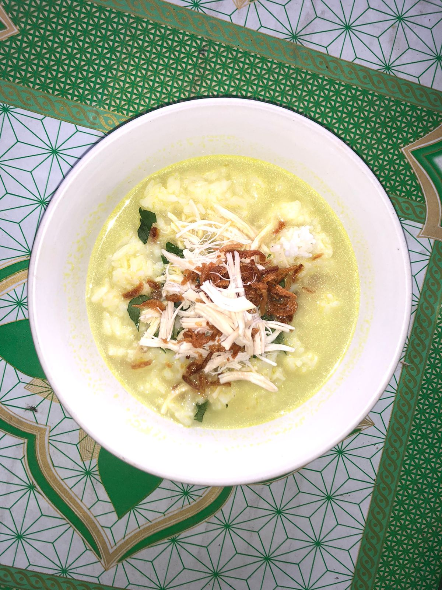

BEST SELLER

SOTO

KARE

Rica-Rica

Awal buka nya tempat makan soto koyor pak udik yaitu berlatar meneruskan usaha dari kakek dan nenek, awalnya kakek dan nenek membuka tempat makan soto juga di pasar gawok yang lama, lalu setelah pasar gawok di renovasi tempatnya jadi kecil dan tidak memungkinkan untuk berjualan disana lagi, kebetulan ibu juga mengandung anak kedua lalu usaha diteruskan di rumah yang berlokasi di desa siwal. Ayah dan Ibu mulai meneruskan usaha tempat makan soto sejak tahun 2013, pada awal buka menu nya hanya ada sedikit, yaitu soto, bakmi toprak, pecel, lalu terkadang ada tambahan satu macam masakan sayur lalu dikarenakan ayah dan ibu sempat mengalami sepi pelanggan dan juga menerima saran dari beberapa pihak, maka mereka memutuskan untuk menambah menu makanan menjadi beraneka ragam seperti sekarang dan Alhamdulillah warung yang sempat mengalami sepi pelanggan kembali ramai pengunjung lagi sampai sekarang
Dibandingkan tempat makan lain disekitar, Soto Koyor Pak Udik lebih beraneka ragam jenis masakan dan lauk nya, serta pelayanan juga dibilang cepat dan ramah, makanan sampingan nya juga beraneka ragam.
Mulai buka jam 5 pagi dan Tutup jam setengah 2Â siang